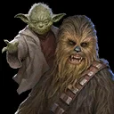
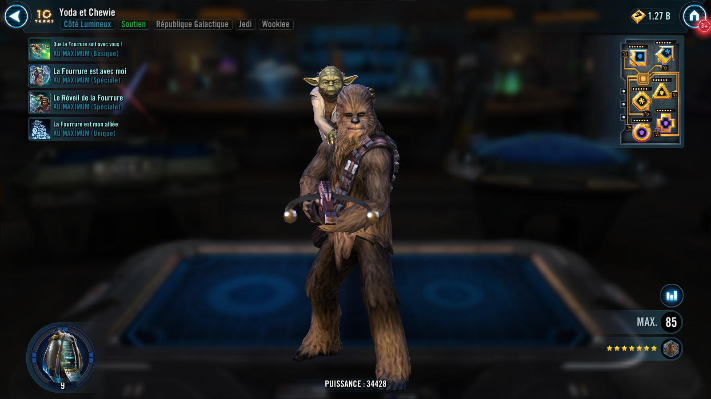
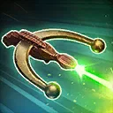
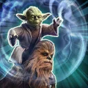
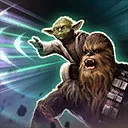
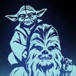

Yoda and Chewie
A Support Wookiee who's got your back!

A Support Wookiee who's got your back!


Deal Special damage to target enemy three times and Yoda & Chewie gain Speed Up for 1 turn.

All Wookiee allies recover 20% Health and Protection and gain Foresight for 2 turns.
If Tarfful was the ally in the Leader slot at the start of battle, all Wookiee Support allies gain Frenzy for 1 turn, which can't be copied or dispelled.

Dispel all buffs on all enemies and deal Special damage to them, and Distract target enemy for 1 turn.
If Tarfful was the ally in the Leader slot at the start of battle, Yoda & Chewie assist, dealing 55% less damage and all Wookiee allies gain Advantage for 2 turns.

At the start of each encounter, Wookiee allies gain Foresight for 2 turns.
If all allies were Wookiees at the start of battle:
- Wookiee Jedi gain Master's Training until the end of battle
- Whenever an enemy attacks an ally out of turn, that ally gains 5% Turn Meter
- Whenever an ally gains Foresight, they gain 10% Offense (stacking, max 100%) until the end of battle (once per turn) and 5% Turn Meter and whenever Foresight expires on an ally, inflict a stack of Off Balance on a random enemy who didn't already have it for 1 turn (once per turn)
Omicron Boost : While in Grand Arenas and if there are no Galactic Legend enemies: Wookiee allies gain 25 Speed and 40% Critical Damage.
If all allies were Wookiees at the start of battle:
- All allies gain Master's Training until the end of battle
- Whenever an ally attacks out of turn, they inflict the target enemy with a stack of Damage Over Time for 1 turn
- Whenever an ally gains Foresight, they also gain Retribution for 2 turns and whenever Foresight expires, remove 5% Turn Meter from all enemies
- The first time each ally defeats an enemy, inflict all enemies with Fear for 1 turn and all allies gain Foresight for 1 turn
- At the start of each of Yoda & Chewie's turns, inflict all enemies with Vulnerable for 1 turn
- Whenever Yoda & Chewie use a Special ability while they have Foresight, they trigger all stacks of Damage Over Time on all enemies and inflict Disarm on the target enemy for 2 turns or until Yoda & Chewie are defeated and remove it from all enemies, which can't be copied, dispelled, evaded, or resisted